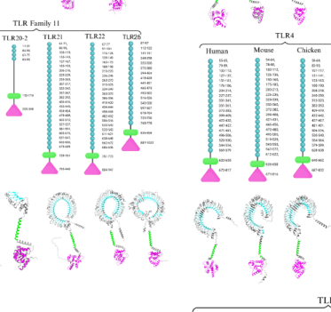

Intracellular Toll-like receptor of zebrafish that senses unmethylated CpG DNA. It has a signal peptide, a leucine-rich-repeat ectodomain, and a cytoplasmic TIR domain, is expressed from early embryonic stages and, in adults, mainly in organs with innate immune function such as intestine, spleen and kidney. The receptor recognises CpG oligodeoxynucleotides with a sequence preference of its own, favouring GTCGTT motifs, and this specificity resides in its ectodomain; it does not respond to ligands of other Toll-like receptors such as double-stranded RNA, flagellin, lipopolysaccharide, acylated lipopeptides or the imidazoquinolines. Most of the protein is found in the endoplasmic reticulum, it binds the trafficking chaperone UNC93B1 through acidic residues in its juxtamembrane region, and its activation requires endosomal maturation and is blocked by chloroquine, so ligand engagement occurs inside the cell. Signalling depends on conserved residues of the TIR box 2 region. Functionally it works alongside the phylogenetically distant TLR9 of the same species: ligands that engage both receptors induce stronger cytokine responses and give better protection against bacterial infection than those engaging TLR9 alone, making this receptor a substantial part of the CpG-DNA sensing capacity of fish. It is the counterpart of avian TLR21, and the two are functional analogues of mammalian TLR9 rather than its orthologues.
| GO Term | Evidence | Action | Reason |
|---|---|---|---|
|
GO:0002221
pattern recognition receptor signaling pathway
|
IDA
PMID:22729906 Positive selection pressure within teleost Toll-like recepto... |
KEEP AS NON CORE |
Summary: The generic parent of the better-supported pathway terms, and its cited evidence is transcript induction rather than signalling.
Reason: The claim is true: this receptor does initiate a pattern recognition receptor signalling pathway. But GO:0002224 and the proposed GO:0035682 are annotated on the same gene with stronger support, and the cited paper measured expression changes after immunostimulant exposure, which speaks to regulation of the gene rather than to its participation in signalling. Kept as a non-core parent rather than removed.
Supporting Evidence:
PMID:22729906
Up to a 3-fold increase in tlr21 and tlr22
|
|
GO:0002224
toll-like receptor signaling pathway
|
IBA
GO_REF:0000033 |
MODIFY |
Summary: Correct family-level statement, but the receptor-specific child is supported by direct evidence on this gene product.
Reason: The ancestral assertion is sound and the target has its own direct evidence: cell-based activation assays in both human and zebrafish cell backgrounds, ectodomain swap chimeras, and TIR box 2 point mutants that abolish signalling. Since GO:0035682 toll-like receptor 21 signaling pathway names this receptor and is warranted by that evidence, both GO:0002224 rows are moved to it rather than leaving the inherited row at the parent level.
Propagation Review
Root cause:
TERM SCOPING PROBLEM
Failure modes:
GRANULARITY MISMATCH
Sources checked:
PANTHER:PTN002808083
SUPPORTS TRANSFER
Family-level pathway assertion is correct; direct evidence on this gene product licenses the receptor-specific child.
Proposed replacements:
toll-like receptor 21 signaling pathway
Supporting Evidence:
PMID:24282308
zebTLR21 responded preferentially to CpG-ODN with GTCGTT motifs
PMID:24282308
the ectodomains of these two TLRs determine their ligand recognition
|
|
GO:0002224
toll-like receptor signaling pathway
|
IDA
PMID:24282308 Toll-like receptor 9 and 21 have different ligand recognitio... |
MODIFY |
Summary: This is the row that should carry the receptor-specific term, since the cited study demonstrated ligand-induced signalling through this receptor.
Reason: GO:0035682 toll-like receptor 21 signaling pathway exists for exactly this receptor, and the cited work supplies what the term requires: activation by a defined ligand, specificity determined by this receptor's ectodomain, dependence on its own TIR residues, and downstream output. The receptor identity is unambiguous, so unlike the mouse TLR11/TLR12 pair the numbered term can be used with confidence. The family-level IBA row is retained separately.
Proposed replacements:
toll-like receptor 21 signaling pathway
Supporting Evidence:
PMID:24282308
zebTLR21 responded preferentially to CpG-ODN with GTCGTT motifs
PMID:24282308
the ectodomains of these two TLRs determine their ligand recognition
PMID:24282308
did not activate cells transfected with vector for control, zebTLR9, and zebTLR21
|
|
GO:0005783
endoplasmic reticulum
|
IDA
PMID:24282308 Toll-like receptor 9 and 21 have different ligand recognitio... |
ACCEPT |
Summary: Most of the receptor is in the endoplasmic reticulum, as visualised directly.
Reason: Confocal microscopy after immunofluorescence staining placed the majority of the receptor in the endoplasmic reticulum, where it colocalises with UNC93B1 and binds it. This is the resting location; activation additionally requires endosomal maturation, which is recorded in the description and in the questions rather than as a competing location annotation, since no endosomal localisation was imaged directly.
Supporting Evidence:
PMID:24282308
The majority of that zebTLR9 and zebTLR21 was localized in the endoplasmic reticulum
PMID:24282308
both zebTLR9 and zebTLR21 bound with UNC93B1 in immunoprecipitation reactions
|
|
GO:0005886
plasma membrane
|
IBA
GO_REF:0000033 |
MARK AS OVER ANNOTATED |
Summary: An intracellular, chloroquine-sensitive receptor; the surface location was inherited from cell-surface TLR donors.
Reason: The ancestral node is seeded by surface receptors, and the property does not transfer: the receptor was imaged in the endoplasmic reticulum, its activation by CpG ligands occurs inside cells and is abolished by blocking endosomal acidification, and it depends on UNC93B1 like the other nucleic-acid-sensing receptors. Marked as over-annotated rather than removed because some transit through or residence at the membrane system is not excluded and the endosomal compartment of action has not itself been imaged; the generic membrane row already covers what is certain.
Propagation Review
Root cause:
PROPAGATION BAD
Failure modes:
COMPARTMENT OR COMPLEX MISMATCH
Sources checked:
PANTHER:PTN002808045
SUPPORTS SOURCE BUT NOT TARGET
Donors are cell-surface TLRs and Drosophila Toll; this nucleic-acid-sensing branch acts intracellularly.
Supporting Evidence:
PMID:24282308
The majority of that zebTLR9 and zebTLR21 was localized in the endoplasmic reticulum
PMID:24282308
This agent effectively blocked the activation of zebTLR9
|
|
GO:0007165
signal transduction
|
IEA
GO_REF:0000002 |
KEEP AS NON CORE |
Summary: True but generic.
Reason: Sound TIR-domain inference, superseded by the pathway annotations on the same gene.
|
|
GO:0016020
membrane
|
IEA
GO_REF:0000044 |
KEEP AS NON CORE |
Summary: Correct at the generic level for a Toll-like receptor.
Reason: True and, for this receptor, the only membrane statement that is safe: the specific compartment of action is intracellular but has not been imaged directly.
|
|
GO:0019731
antibacterial humoral response
|
IDA
PMID:24282308 Toll-like receptor 9 and 21 have different ligand recognitio... |
KEEP AS NON CORE |
Summary: The receptor mediates a CpG-driven protective response to a bacterial pathogen, but as the sensor upstream of the humoral effectors.
Reason: The cited work showed that ligands engaging this receptor induced cytokines and improved survival and bacterial clearance in Edwardsiella tarda infection, so the annotation is evidentially grounded and the acts_upstream_of_or_within relation is apt. It is kept as non-core rather than core because the receptor does not itself perform the humoral antibacterial work: it recognises the ligand and initiates signalling, and the effector molecules are induced downstream. The informative statements about this gene product are the recognition activity and the pathway term.
Supporting Evidence:
PMID:24282308
These results suggest that zebTLR9 and zebTLR21 cooperatively mediate the antimicrobial
PMID:24282308
were more bactericidal in zebrafish
|
|
GO:0038023
signaling receptor activity
|
IBA
GO_REF:0000033 |
MODIFY |
Summary: Unmethylated CpG DNA is a pathogen-associated pattern recognised through this receptor's ectodomain, so the specific molecular function applies.
Reason: GO:0038023 is correct but generic. Heterologous expression of this receptor confers responsiveness to CpG oligodeoxynucleotides with a distinctive motif preference, chimera experiments show that its ectodomain determines that preference, and ligands of the other Toll-like receptors do not activate it, which together support recognition by this receptor rather than by something it recruits. GO:0038187 is the conventional molecular function for characterised TLRs. GO:0045322 unmethylated CpG binding is not proposed, because no direct binding assay has been done for this receptor and even mammalian TLR9 carries that term only by ISS and IEA.
Propagation Review
Root cause:
TERM SCOPING PROBLEM
Failure modes:
GRANULARITY MISMATCH
Sources checked:
PANTHER:PTN002808045
SUPPORTS TRANSFER
The node assertion is right; direct functional data on this gene product license the specific child.
Proposed replacements:
pattern recognition receptor activity
Supporting Evidence:
PMID:24282308
zebTLR21 responded preferentially to CpG-ODN with GTCGTT motifs
PMID:24282308
the ectodomains of these two TLRs determine their ligand recognition
PMID:24282308
did not activate cells transfected with vector for control, zebTLR9, and zebTLR21
|
|
GO:0061809
NAD+ nucleosidase activity, cyclic ADP-ribose generating
|
IEA
GO_REF:0000003 |
REMOVE |
Summary: A spurious enzymatic activity inherited from an EC number on the sequence record; no Toll-like receptor has demonstrated NADase activity.
Reason: This row is an electronic mapping of EC:3.2.2.6, which appears on the TrEMBL DE line because the underlying RefSeq record carries it. The claim is almost certainly a mis-generalisation from TIR domains that do have NAD hydrolase activity, namely plant TIR proteins and human SARM1. UniProt states the opposite conclusion for this family explicitly on its reviewed entries: despite the presence of the catalytic aspartate, the isolated TIR domain of human TLR4 lacks NADase activity, and it is therefore unlikely that Toll-like receptors have it. Nothing in the functional literature on any TLR21 reports enzymatic activity; the receptor's characterised activity is CpG-DNA recognition, and a nucleosidase annotation would also imply a cytosolic catalytic role at odds with the ectodomain-mediated recognition demonstrated. This is a demonstrably wrong EC-to-GO mapping, which is the case the REMOVE action exists for.
Supporting Evidence:
PMID:24282308
zebTLR21 responded preferentially to CpG-ODN with GTCGTT motifs
PMID:24282308
did not activate cells transfected with vector for control, zebTLR9, and zebTLR21
file:DANRE/tlr21/tlr21-deep-research-falcon.md
The EC number 3.2.2.6 assigned to F1QMN8 in UniProt appears to be an annotation error
|
Q: Which adaptor does this receptor use? No zebrafish experiment has tested adaptor recruitment for it, and the comparative literature is divided between a MyD88-associated model and a TRIF-exclusive model proposed for fish TLR21, so no adaptor-dependent process term is annotated here.
Q: Does this receptor bind CpG DNA directly, and at what pH? All the evidence is functional, and a binding assay on the ectodomain would license GO:0045322 unmethylated CpG binding, which mammalian TLR9 itself holds only by similarity.
Q: In which compartment does activation actually occur? The resting receptor was imaged in the endoplasmic reticulum and activation is blocked by inhibitors of endosomal maturation, but no endosomal pool has been visualised, which is why no endosome annotation is proposed here.
Q: Why does GOA carry an EC:3.2.2.6-derived NADase annotation on this entry? The EC number is on the RefSeq record; correcting it at source would prevent the same annotation reappearing on this and other fish TLR entries.
Q: How should GO express the relationship between TLR21 and TLR9, which sense the same ligand class from different branches of the family and, in zebrafish, do so in the same animal with complementary motif preferences? Annotation transfer between them would be wrong, but the functional analogy is informative.
Experiment: Measure binding of defined CpG and control oligodeoxynucleotides to the purified ectodomain of this receptor at acidic and neutral pH, alongside the zebrafish TLR9 ectodomain, to test whether the motif preferences seen in cells reflect differential affinity.
Hypothesis: The GTCGTT preference is a property of direct ligand binding by the ectodomain rather than of downstream events.
Type: direct binding assay
Experiment: Track the receptor at endogenous levels with a tagged knock-in allele before and after CpG stimulation, and test whether UNC93B1 disruption prevents its exit from the endoplasmic reticulum and abolishes the response.
Hypothesis: Activation follows UNC93B1-dependent trafficking from the endoplasmic reticulum to an acidified endosomal compartment, which would justify an endosome annotation currently unsupported.
Type: endogenous localisation and trafficking
Experiment: Generate zebrafish lacking this receptor, its paralogous relative tlr22 and tlr9 singly and in combination, and compare CpG-induced cytokine responses and survival after Edwardsiella tarda challenge.
Hypothesis: The cooperation inferred from ligand-preference comparisons reflects genuinely non-redundant contributions of the two receptors to antibacterial defence.
Type: loss-of-function genetics with infection challenge
The research report should be a detailed narrative explaining the function, biological processes, and localization of the gene product. Citations should be given for all claims.
You should prioritize authoritative reviews and primary scientific literature when conducting research. You can supplement
this with annotations you find in gene/protein databases, but these can be outdated or inaccurate.
We are specifically interested in the primary function of the gene - for enzymes, what reaction is catalyzed, and what is the substrate specificity? For transporters, what is the substrate? For structural proteins or adapters, what is the broader structural role? For signaling molecules, what is the role in the pathway.
We are interested in where in or outside the cell the gene product carries out its function.
We are also interested in the signaling or biochemical pathways in which the gene functions. We are less interested in broad pleiotropic effects, except where these elucidate the precise role.
Include evidence where possible. We are interested in both experimental evidence as well as inference from structure, evolution, or bioinformatic analysis. Precise studies should be prioritized over high-throughput, where available.
This report provides a comprehensive functional annotation of Toll-like receptor 21 (TLR21) from zebrafish (Danio rerio), UniProt accession F1QMN8. Based on current literature, zebrafish TLR21 is an endosomal pattern recognition receptor that detects unmethylated CpG DNA motifs and initiates innate immune responses. It functions as a non-mammalian functional homolog of mammalian TLR9, expanding the repertoire of CpG DNA surveillance in teleost fish (davis2026tolllikereceptorsin pages 18-20, lai2020immunostimulatoryactivitiesof pages 2-3).
Critical clarification regarding UniProt annotation: The EC number 3.2.2.6 assigned to F1QMN8 in UniProt appears to be an annotation error. TLR21 is a transmembrane signaling receptor, not an enzyme with catalytic activity. Multiple authoritative sources confirm that TLR21 binds CpG DNA as a ligand to initiate signal transduction, rather than acting as a substrate for enzymatic modification (davis2026tolllikereceptorsin pages 18-20, lai2020immunostimulatoryactivitiesof pages 2-3, davis2026tolllikereceptorsin pages 13-14).
TLR21 is a fish- and avian-specific member of the Toll-like receptor family that is absent from mammals (davis2026tolllikereceptorsin pages 13-14, davis2026tolllikereceptorsin pages 18-20, franza2024zebrafish(daniorerio) pages 7-8). It belongs to the TLR11 superfamily, which includes various non-mammalian pattern recognition receptors involved in pathogen sensing (davis2026tolllikereceptorsin pages 13-14, ghani2024unveilingthemultifaceted pages 4-5).
TLR21 is present across teleost fishes, birds, and some amphibians, but notably absent from mammals (davis2026tolllikereceptorsin pages 18-20, guabiraba2024mechanismsoftype pages 4-7). Zebrafish and many other teleosts retain both TLR9 and TLR21, providing complementary CpG DNA recognition capabilities (lai2020immunostimulatoryactivitiesof pages 4-5, davis2026tolllikereceptorsin pages 13-14). This dual-receptor system allows broader detection of microbial DNA than either receptor alone (lai2020immunostimulatoryactivitiesof pages 3-4, lai2020immunostimulatoryactivitiesof pages 2-3).
TLR21 is a pattern recognition receptor (PRR), not a metabolic enzyme. Despite the EC 3.2.2.6 annotation in UniProt, extensive literature confirms that TLR21 has no catalytic or enzymatic activity (davis2026tolllikereceptorsin pages 18-20, lai2020immunostimulatoryactivitiesof pages 2-3, davis2026tolllikereceptorsin pages 13-14). Its primary molecular function is to bind pathogen-associated molecular patterns (PAMPs) and convert this recognition event into intracellular signaling (lai2020immunostimulatoryactivitiesof pages 2-3, ghani2024unveilingthemultifaceted pages 8-9).
TLR21 functions as a sensor for unmethylated CpG-containing DNA, particularly synthetic CpG oligodeoxynucleotides (CpG-ODNs) that mimic microbial DNA (lai2020immunostimulatoryactivitiesof pages 2-3, davis2026tolllikereceptorsin pages 20-21, davis2026tolllikereceptorsin pages 18-20). Direct experimental evidence from zebrafish comes from heterologous expression studies: when zebrafish TLR21 (zebTLR21) was expressed in HEK293 cells, it conferred responsiveness to CpG-ODN stimulation, confirming its role as a functional CpG DNA receptor (lai2020immunostimulatoryactivitiesof pages 2-3).
Sequence specificity: Zebrafish TLR21 preferentially recognizes CpG motifs containing the GTCGTT hexamer sequence (lai2020immunostimulatoryactivitiesof pages 4-5, lai2020immunostimulatoryactivitiesof pages 3-4). This preference distinguishes it from zebrafish TLR9, which more strongly recognizes GACGTT- or AACGTT-containing motifs (lai2020immunostimulatoryactivitiesof pages 4-5, lai2020immunostimulatoryactivitiesof pages 3-4). The GTCGTT motif preference aligns TLR21 with sequences that show higher activity in human TLR9 assays, whereas zebrafish TLR9 resembles mouse TLR9 in its motif preference (lai2020immunostimulatoryactivitiesof pages 4-5, lai2020immunostimulatoryactivitiesof pages 2-3).
Natural ligands: In the physiological context, TLR21 recognizes CpG-rich DNA from bacteria and viruses that enter cells through endocytosis (davis2026tolllikereceptorsin pages 20-21, davis2026tolllikereceptorsin pages 18-20). Current evidence does not support TLR21 recognition of RNA, non-CpG DNA, or other distinct PAMP classes (guabiraba2024mechanismsoftype pages 7-10, lai2020immunostimulatoryactivitiesof pages 1-2, guabiraba2024mechanismsoftype pages 4-7).
TLR21 is described as a functional homolog of mammalian TLR9, despite originating from a distinct evolutionary lineage (davis2026tolllikereceptorsin pages 18-20, davis2026tolllikereceptorsin pages 13-14, lai2020immunostimulatoryactivitiesof pages 1-2). Both receptors detect CpG DNA in endosomal compartments and initiate innate immune responses. However, TLR21 belongs to the TLR11 family, whereas TLR9 belongs to the TLR7/8/9 family (davis2026tolllikereceptorsin pages 13-14, lai2020immunostimulatoryactivitiesof pages 5-7). In non-mammalian vertebrates like birds, TLR21 has apparently functionally replaced TLR9, as chickens possess TLR21 but lack TLR9 (guabiraba2024mechanismsoftype pages 7-10, guabiraba2024mechanismsoftype pages 4-7). In contrast, zebrafish retain both receptors, enabling cooperative CpG surveillance (lai2020immunostimulatoryactivitiesof pages 3-4, davis2026tolllikereceptorsin pages 13-14).
| Feature | TLR21 | TLR9 | Comparative interpretation |
|---|---|---|---|
| Phylogenetic relationship | Member of the TLR11-family lineage; a non-mammalian CpG-DNA receptor related to, but not a one-to-one ortholog of, TLR9 (davis2026tolllikereceptorsin pages 13-14, lai2020immunostimulatoryactivitiesof pages 5-7) | Member of the TLR7/8/9 nucleic-acid-sensing lineage (lai2020immunostimulatoryactivitiesof pages 5-7) | TLR21 is best described as a functional homolog of mammalian TLR9 because both sense CpG DNA, despite belonging to distinct evolutionary TLR lineages (davis2026tolllikereceptorsin pages 18-20, lai2020immunostimulatoryactivitiesof pages 1-2) |
| Principal ligand | Unmethylated CpG-containing microbial DNA and synthetic CpG oligodeoxynucleotides (CpG-ODNs) (lai2020immunostimulatoryactivitiesof pages 2-3) | Unmethylated CpG-containing microbial DNA and CpG-ODNs (lai2020immunostimulatoryactivitiesof pages 3-4, lai2020immunostimulatoryactivitiesof pages 1-2) | Both receptors detect CpG DNA, and teleosts may use them cooperatively to broaden sequence recognition (lai2020immunostimulatoryactivitiesof pages 3-4, davis2026tolllikereceptorsin pages 13-14) |
| CpG-sequence preference in zebrafish | Preferentially responds to CpG-ODNs containing GTCGTT, including sequences with relatively strong activity toward human TLR9 (lai2020immunostimulatoryactivitiesof pages 4-5, lai2020immunostimulatoryactivitiesof pages 3-4) | Preferentially responds to GACGTT- or AACGTT-containing CpG-ODNs, resembling mouse-active CpG patterns (lai2020immunostimulatoryactivitiesof pages 4-5, lai2020immunostimulatoryactivitiesof pages 3-4) | Ligand selectivity is overlapping but non-identical; the exact optimum is species- and sequence-dependent rather than universally fixed across teleosts (lai2020immunostimulatoryactivitiesof pages 4-5, lai2020immunostimulatoryactivitiesof pages 2-3) |
| Cellular location | Intracellular/endosomal receptor; proposed to traffic from the ER to mature endosomal membranes through UNC93B1 before sensing internalized DNA (neves2026cartilaginousfishinform pages 13-16, davis2026tolllikereceptorsin pages 20-21) | Canonical intracellular receptor localized to endosomal membranes (davis2026tolllikereceptorsin pages 13-14) | Endosomal localization restricts recognition largely to DNA delivered by endocytosis or released from internalized microbes |
| Adaptor usage | Not conclusively established for zebrafish. Recent fish models propose TRIF-dependent, MyD88-independent signaling, but zebrafish-specific adaptor loss-of-function or recruitment evidence is lacking; other reviews infer MyD88-associated signaling (davis2026tolllikereceptorsin pages 20-21, lai2020immunostimulatoryactivitiesof pages 2-3, li2017patternrecognitionreceptors pages 2-3) | Principally MyD88-dependent, with downstream IRAK–TRAF6 signaling (lai2020immunostimulatoryactivitiesof pages 2-3, davis2026tolllikereceptorsin pages 13-14) | TLR9 adaptor usage is comparatively well established; any claim that zebrafish TLR21 signals exclusively through TRIF should be treated as a teleost model rather than a demonstrated zebrafish mechanism |
| Major downstream outputs | CpG-dependent activation of inflammatory pathways, including NF-κB and AP-1; proposed fish models also connect TLR21 to IRF3/IRF7 and type-I interferon production (davis2026tolllikereceptorsin pages 20-21, davis2026tolllikereceptorsin pages 21-23) | MyD88–IRAK–TRAF6–TAK1 signaling activates NF-κB and AP-1; IRF7-dependent interferon responses occur in appropriate immune-cell contexts (guabiraba2024mechanismsoftype pages 10-17, lai2020immunostimulatoryactivitiesof pages 2-3) | Both can induce inflammatory and antimicrobial programs, but the receptor-specific downstream pathway in zebrafish remains less resolved for TLR21 |
| Evolutionary distribution | Present in many teleost fishes and also in birds, amphibians, and some other non-mammalian vertebrates; absent from mammals (davis2026tolllikereceptorsin pages 13-14, davis2026tolllikereceptorsin pages 18-20) | Present in mammals and many teleost fishes but generally absent from birds (lai2020immunostimulatoryactivitiesof pages 3-4, guabiraba2024mechanismsoftype pages 4-7) | Calling TLR21 simply “fish-specific” is imprecise: it is a non-mammalian receptor prominent in fish, whereas many teleosts retain both TLR21 and TLR9 |
| Structural distinction | Canonical LRR–transmembrane–TIR architecture; generally shorter than teleost TLR9 and lacks the characteristic ectodomain Z-loop/undefined region (davis2026tolllikereceptorsin pages 20-21, lai2020immunostimulatoryactivitiesof pages 5-7) | Canonical LRR–transmembrane–TIR architecture with a characteristic ectodomain Z-loop/undefined region; generally longer than 1,000 amino acids in teleosts (lai2020immunostimulatoryactivitiesof pages 5-7) | Both are single-pass signaling receptors rather than enzymes, but their ectodomain architectures and evolutionary origins differ |
| Key functional difference | Expands the teleost CpG-DNA recognition repertoire and preferentially detects CpG sequences not optimally sensed by zebrafish TLR9 (lai2020immunostimulatoryactivitiesof pages 4-5, lai2020immunostimulatoryactivitiesof pages 2-3) | Provides the evolutionarily conserved TLR9-type CpG-sensing system found prominently in mammals (davis2026tolllikereceptorsin pages 18-20, davis2026tolllikereceptorsin pages 13-14) | In zebrafish, TLR21 complements rather than simply replaces TLR9; CpG-ODNs activating both receptors can produce stronger cytokine responses than receptor-selective ligands (lai2020immunostimulatoryactivitiesof pages 3-4, lai2020immunostimulatoryactivitiesof pages 2-3) |
Table: Comparison of CpG recognition, signaling, structure, and evolutionary distribution of TLR21 and TLR9. It emphasizes that zebrafish retain both receptors and that TLR21 is a functional—not phylogenetic—homolog of mammalian TLR9.
TLR21 exhibits the canonical type-I single-pass transmembrane architecture characteristic of Toll-like receptors (li2018molecularcharacterizationand pages 2-4, davis2026tolllikereceptorsin pages 7-8, ghani2024unveilingthemultifaceted pages 2-4):
This domain organization matches the InterPro annotations provided for F1QMN8, including Leu-rich_rpt (IPR001611), LRR_dom_sf (IPR032675), TIR_dom (IPR000157), and Toll_tir_struct_dom_sf (IPR035897).
The extracellular LRR domain forms a curved, horseshoe-like scaffold that presents a concave surface for ligand binding (davis2026tolllikereceptorsin pages 20-21, lai2020immunostimulatoryactivitiesof pages 5-7, davis2026tolllikereceptorsin pages 7-8). The number of LRRs varies among teleost TLR21 proteins: common carp TLR21 has 14 LRRs, while chicken TLR21 has 20 LRRs (suryohastari2023molecularcharacteristicsand pages 6-10, suryohastari2023molecularcharacteristicsand pages 4-6, li2018molecularcharacterizationand pages 2-4). A zebrafish-specific LRR count was not definitively established in the available literature.
Structural modeling of channel catfish TLR21 predicts that CpG-ODN2007 contacts LRR1 and LRR12-24 regions, with positively charged residues interacting with the DNA phosphate backbone and polar residues contacting unpaired nucleotides (davis2026tolllikereceptorsin pages 20-21, davis2026tolllikereceptorsin media 4092c9b6, davis2026tolllikereceptorsin media b3beb9f5).
The TM domain is approximately 20-23 amino acids of hydrophobic residues that anchor TLR21 in membranes and may facilitate receptor homodimerization upon ligand binding (suryohastari2023molecularcharacteristicsand pages 6-10, davis2026tolllikereceptorsin pages 20-21, ghani2024unveilingthemultifaceted pages 2-4). The cytoplasmic TIR domain is essential for signal transduction and contains conserved sequence boxes that mediate protein-protein interactions with adaptor molecules (suryohastari2023molecularcharacteristicsand pages 6-10, li2018molecularcharacterizationand pages 2-4).
Unlike TLR9, TLR21 lacks a characteristic "Z-loop" or undefined region in its ectodomain, making it structurally shorter than TLR9 (davis2026tolllikereceptorsin pages 20-21, lai2020immunostimulatoryactivitiesof pages 5-7). Teleost TLR21 proteins typically contain fewer than 1,000 amino acids, whereas teleost TLR9 proteins exceed 1,000 amino acids (lai2020immunostimulatoryactivitiesof pages 5-7).
TLR21 is an endosomal receptor, not a cell-surface receptor (neves2026cartilaginousfishinform pages 13-16, davis2026tolllikereceptorsin pages 20-21). It localizes to endosomal membranes where it encounters internalized DNA (lai2020immunostimulatoryactivitiesof pages 1-2, neves2026cartilaginousfishinform pages 13-16). This intracellular localization is critical for distinguishing self DNA in the nucleus and cytoplasm from microbial DNA delivered via endocytosis.
Based on comparative models, TLR21 is proposed to be synthesized in the endoplasmic reticulum (ER) and then trafficked to mature endosomal membranes by the chaperone protein UNC93B1 (davis2026tolllikereceptorsin pages 20-21, davis2026tolllikereceptorsin media 4092c9b6). This trafficking mechanism parallels that of mammalian endosomal TLRs. Following CpG DNA uptake by endocytosis, endosomal acidification and maturation allow TLR21 to encounter its ligand and undergo homodimerization (davis2026tolllikereceptorsin pages 20-21, davis2026tolllikereceptorsin media 4092c9b6, davis2026tolllikereceptorsin media 0ea87ce0).
Important caveat: While this trafficking model is well-supported for mammalian endosomal TLRs and inferred for teleost TLR21, direct experimental validation of UNC93B1-dependent trafficking for zebrafish F1QMN8 specifically was not found in the reviewed literature (davis2026tolllikereceptorsin pages 20-21).
A significant limitation in current zebrafish TLR21 research is the lack of definitive experimental evidence establishing which adaptor protein(s) TLR21 uses. The literature presents conflicting models:
TRIF-dependent model: Recent comparative analyses propose that fish TLR21 signals exclusively through TRIF (TICAM1), in contrast to mammalian TLR9, which signals through MyD88 (davis2026tolllikereceptorsin pages 20-21). This model suggests that ligand binding triggers TRIF recruitment, followed by activation of TRAF3, TBK1, and ultimately IRF3/IRF7 for type I interferon production, alongside NF-κB activation (davis2026tolllikereceptorsin pages 20-21, davis2026tolllikereceptorsin pages 21-23, davis2026tolllikereceptorsin media 4092c9b6, davis2026tolllikereceptorsin media 0ea87ce0).
MyD88-associated model: Other sources list MyD88, TIRAP, and SCIMP as TLR21-associated adaptors (ghani2024unveilingthemultifaceted pages 8-9). General teleost TLR signaling reviews note that most TLRs signal through MyD88, and that zebrafish possess functional MyD88 (lai2020immunostimulatoryactivitiesof pages 2-3, li2017patternrecognitionreceptors pages 1-2, tanekhy2016theroleof pages 11-13).
Critical assessment: No zebrafish-specific TLR21 adaptor knockout, co-immunoprecipitation, or complementation experiment was identified in the reviewed literature (davis2026tolllikereceptorsin pages 20-21, li2017patternrecognitionreceptors pages 1-2, li2017patternrecognitionreceptors pages 2-3). The TRIF-exclusive model appears to be inferred from limited teleost data and computational comparisons rather than direct zebrafish experimental validation (davis2026tolllikereceptorsin pages 20-21). Therefore, definitive adaptor assignment for zebrafish TLR21 remains an open question requiring targeted experimental investigation.
Regardless of proximal adaptor identity, TLR21 activation converges on well-characterized downstream pathways (davis2026tolllikereceptorsin pages 20-21, davis2026tolllikereceptorsin media 4092c9b6, davis2026tolllikereceptorsin media 0ea87ce0):
NF-κB pathway: TLR21 activation leads to phosphorylation and activation of the IKK complex, IκB degradation, and NF-κB nuclear translocation. NF-κB drives transcription of pro-inflammatory cytokines including TNF-α, IL-1β, IL-6, and IL-8 (davis2026tolllikereceptorsin pages 20-21, lai2020immunostimulatoryactivitiesof pages 2-3, ghani2024unveilingthemultifaceted pages 8-9, davis2026tolllikereceptorsin media 4092c9b6).
MAPK/AP-1 pathway: Parallel activation of mitogen-activated protein kinase (MAPK) cascades, including ERK, JNK, and p38, leads to AP-1 transcription factor activation and inflammatory gene expression (davis2026tolllikereceptorsin pages 20-21, ghani2024unveilingthemultifaceted pages 4-5, davis2026tolllikereceptorsin media 4092c9b6, davis2026tolllikereceptorsin media 0ea87ce0).
Interferon regulatory factor (IRF) pathway: TLR21 activation can induce IRF3 and IRF7, leading to production of type I interferons (IFN-α/β) that mediate antiviral responses (guabiraba2024mechanismsoftype pages 10-17, davis2026tolllikereceptorsin pages 21-23, davis2026tolllikereceptorsin media 4092c9b6, davis2026tolllikereceptorsin media 0ea87ce0). Studies in chicken TLR21 demonstrate that both NF-κB and IRF7 are required for optimal IFN-β transcription, and this occurs independently of TBK1 in the avian system (guabiraba2024mechanismsoftype pages 10-17, guabiraba2024mechanismsoftype pages 7-10, guabiraba2024mechanismsoftype pages 1-4).
The integrated signaling pathways activate expression of:
- Pro-inflammatory cytokines: IL-1β, IL-6, TNF-α, IL-8, IL-12β (davis2026tolllikereceptorsin pages 20-21, guabiraba2024mechanismsoftype pages 7-10, ghani2024unveilingthemultifaceted pages 8-9)
- Type I interferons: IFN-α, IFN-β (davis2026tolllikereceptorsin pages 21-23, guabiraba2024mechanismsoftype pages 7-10, davis2026tolllikereceptorsin media 4092c9b6)
- Chemokines: CCL4 and others (guabiraba2024mechanismsoftype pages 7-10)
- Interferon-stimulated genes (ISGs): ISG12.2 and related antiviral effectors (guabiraba2024mechanismsoftype pages 7-10)
| Characteristic | Zebrafish TLR21 summary | Evidence status and key citations |
|---|---|---|
| Gene/protein identity | Gene: tlr21 (synonym TLR21.1); organism: Danio rerio; UniProt: F1QMN8; protein: Toll-like receptor 21 precursor. This identity is consistent with literature recognizing zebrafish TLR21 as a non-mammalian Toll-like receptor and CpG-DNA sensor. | Identity comes from the supplied UniProt record; zebrafish TLR21 function is supported by receptor-expression studies and comparative reviews. (lai2020immunostimulatoryactivitiesof pages 2-3, li2017patternrecognitionreceptors pages 1-2) |
| Protein family | Pattern-recognition receptor in the Toll-like receptor family, generally grouped with the TLR11-family radiation. It is a signaling receptor—not a metabolic enzyme. | Comparative and structural evidence. (davis2026tolllikereceptorsin pages 13-14, lai2020immunostimulatoryactivitiesof pages 5-7, ghani2024unveilingthemultifaceted pages 2-4) |
| Domain architecture | Canonical type-I single-pass TLR organization: N-terminal signal peptide/precursor region; extracellular leucine-rich-repeat (LRR) ectodomain for ligand recognition; one transmembrane helix; and cytoplasmic Toll/interleukin-1 receptor (TIR) domain for signaling. | Strong family/domain evidence; matches the InterPro domains supplied for F1QMN8. (li2018molecularcharacterizationand pages 2-4, davis2026tolllikereceptorsin pages 7-8, ghani2024unveilingthemultifaceted pages 2-4) |
| LRR structure | The LRR ectodomain is predicted to form a curved or horseshoe-like ligand-binding surface. Exact LRR count should not be transferred from another species: reported TLR21 counts vary substantially among teleosts, and a zebrafish-F1QMN8-specific experimentally validated count was not found. | Comparative structural inference; species variability documented. (li2018molecularcharacterizationand pages 2-4, lai2020immunostimulatoryactivitiesof pages 5-7, davis2026tolllikereceptorsin pages 7-8) |
| Receptor complex | Ligand binding is expected to promote TLR21 homodimerization. A recent channel-catfish model predicts a 2:2 TLR21:CpG-ODN complex in which DNA spans the concave LRR surfaces; this is informative but not direct zebrafish structural evidence. | Comparative computational model, not a zebrafish crystal/cryo-EM structure. (davis2026tolllikereceptorsin pages 20-21, davis2026tolllikereceptorsin media 4092c9b6) |
| Primary molecular function | Binds immunostimulatory DNA containing unmethylated CpG motifs and converts ligand recognition into intracellular innate-immune signaling. Zebrafish TLR21 expression in HEK293 cells conferred responsiveness to CpG oligodeoxynucleotides (CpG-ODNs). | Direct zebrafish heterologous-cell functional evidence. (lai2020immunostimulatoryactivitiesof pages 2-3) |
| Ligand/PAMP specificity | Best-supported ligand class: microbial or synthetic unmethylated CpG-containing DNA, especially single-stranded CpG-ODNs. Zebrafish TLR21 preferentially responds to CpG sequences with human-TLR9-like activity; comparative work associates TLR21 particularly with GTCGTT-containing motifs, whereas potency remains sequence- and species-dependent. | Direct zebrafish CpG-ODN response plus comparative motif evidence. (lai2020immunostimulatoryactivitiesof pages 4-5, lai2020immunostimulatoryactivitiesof pages 3-4, lai2020immunostimulatoryactivitiesof pages 2-3) |
| Unsupported ligand claims | Current zebrafish-specific evidence does not establish TLR21 as a general sensor of RNA, non-CpG DNA, LPS, or unrelated PAMP classes. Reports of broader ligand recognition in other fishes should not automatically be assigned to F1QMN8. | Evidence supports a CpG-DNA-centered annotation. (guabiraba2024mechanismsoftype pages 7-10, davis2026tolllikereceptorsin pages 18-20, lai2020immunostimulatoryactivitiesof pages 1-2) |
| Enzymatic activity | No demonstrated catalytic activity. TLR21 binds a ligand and initiates signaling; CpG DNA is a ligand, not an enzymatic substrate. Accordingly, the supplied EC 3.2.2.6 assignment is incompatible with established TLR21 biology and is most plausibly a propagated annotation error rather than evidence of nucleosidase activity. | Multiple functional sources describe a receptor and report no catalysis or applicable EC classification. (davis2026tolllikereceptorsin pages 18-20, lai2020immunostimulatoryactivitiesof pages 2-3, davis2026tolllikereceptorsin pages 13-14) |
| Subcellular localization | Best current model places TLR21 on endosomal membranes, where internalized CpG DNA becomes accessible to its luminal LRR ectodomain. It is not best annotated as a constitutive cell-surface receptor. | Endosomal localization is supported comparatively; direct localization of endogenous zebrafish F1QMN8 remains limited. (lai2020immunostimulatoryactivitiesof pages 1-2, neves2026cartilaginousfishinform pages 13-16, davis2026tolllikereceptorsin pages 20-21) |
| Intracellular trafficking | Comparative models propose synthesis/retention in the endoplasmic reticulum followed by UNC93B1-dependent trafficking to mature endosomes. This mechanism is plausible for zebrafish but should be treated as inferred rather than directly demonstrated for F1QMN8. | Comparative teleost model with explicit evidence limitation. (davis2026tolllikereceptorsin pages 20-21) |
| Proximal signaling adaptor | Unresolved for zebrafish TLR21. Some recent fish models propose exclusive TRIF/TICAM1-dependent, MyD88-independent signaling, whereas broader TLR reviews and comparative studies imply or list MyD88-associated signaling. No definitive zebrafish TLR21-specific adaptor knockout, interaction, or complementation experiment was identified. | Conflicting comparative models; avoid assigning a single adaptor as experimentally proven in zebrafish. (davis2026tolllikereceptorsin pages 20-21, lai2020immunostimulatoryactivitiesof pages 2-3, li2017patternrecognitionreceptors pages 1-2) |
| Downstream pathways | Supported or proposed outputs include activation of IKK–NF-κB, MAPK–AP-1, and interferon-regulatory pathways. TRIF-centered fish models additionally propose TRAF3/TBK1 signaling to IRF3/IRF7, but this detailed route has not been validated specifically for zebrafish F1QMN8. | Receptor-level zebrafish activation is established; pathway wiring is partly comparative inference. (davis2026tolllikereceptorsin pages 20-21, lai2020immunostimulatoryactivitiesof pages 1-2, davis2026tolllikereceptorsin media 4092c9b6) |
| Transcription factors activated | Principal expected effectors are NF-κB and AP-1 for inflammatory transcription, with IRF3/IRF7 implicated in type-I-interferon output in comparative fish models. | Comparative TLR21 and general teleost TLR signaling evidence. (guabiraba2024mechanismsoftype pages 10-17, lai2020immunostimulatoryactivitiesof pages 2-3, davis2026tolllikereceptorsin media 4092c9b6) |
| Biological processes | Innate immune recognition of pathogen-associated DNA; induction of inflammatory cytokine programs; potential type-I-interferon/antiviral responses; and cooperation with zebrafish TLR9 to broaden CpG-sequence recognition. | Direct CpG responsiveness plus comparative pathway evidence. (lai2020immunostimulatoryactivitiesof pages 3-4, davis2026tolllikereceptorsin pages 20-21, davis2026tolllikereceptorsin pages 13-14) |
| Relationship to TLR9 | TLR21 is a functional analogue, not a simple one-to-one mammalian ortholog, of mammalian TLR9. Zebrafish possesses both TLR9 and TLR21; their overlapping but distinct CpG-ODN preferences can provide complementary DNA surveillance. | Functional and evolutionary evidence. (lai2020immunostimulatoryactivitiesof pages 2-3, lai2020immunostimulatoryactivitiesof pages 4-5, davis2026tolllikereceptorsin pages 13-14) |
| Host-defense evidence | CpG-ODNs activating both zebrafish TLR9 and TLR21 produce stronger cytokine responses than receptor-selective ligands, and CpG stimulation has been associated with enhanced antibacterial protection. Attribution of whole-animal protection exclusively to TLR21 remains unproven because TLR9 and other DNA sensors may contribute. | Functional association with an important receptor-specificity caveat. (lai2020immunostimulatoryactivitiesof pages 4-5, lai2020immunostimulatoryactivitiesof pages 3-4, lai2020immunostimulatoryactivitiesof pages 2-3) |
| Functional-annotation confidence | High confidence: Toll-like CpG-DNA pattern-recognition receptor with LRR–TM–TIR architecture. Moderate confidence: endosomal localization and cooperation with TLR9. Low/uncertain: exact zebrafish adaptor usage, precise endogenous cell/tissue distribution, complete natural-ligand repertoire, and detailed interferon pathway wiring. | Evidence-weighted synthesis of direct zebrafish experiments and comparative inference. (lai2020immunostimulatoryactivitiesof pages 2-3, davis2026tolllikereceptorsin pages 20-21, li2017patternrecognitionreceptors pages 2-3) |
Table: This table consolidates the identity, structure, localization, ligand specificity, signaling, and biological role of zebrafish TLR21 while distinguishing direct zebrafish evidence from comparative inference. It also flags the supplied EC number and definitive adaptor assignment as unsupported.
TLR21 plays a critical role in innate immune recognition of bacterial and viral pathogens in zebrafish (davis2026tolllikereceptorsin pages 20-21, lai2020immunostimulatoryactivitiesof pages 2-3, franza2024zebrafish(daniorerio) pages 7-8). By detecting microbial CpG DNA, TLR21 initiates rapid inflammatory responses that help control infection before adaptive immunity develops (lai2020immunostimulatoryactivitiesof pages 2-3, davis2026tolllikereceptorsin pages 13-14).
Experimental evidence: Treatment of zebrafish with CpG-ODN2007, a synthetic TLR21 ligand, significantly reduced mortality from Vibrio vulnificus infection (survival rate 85% vs. 57.9% in controls) and upregulated expression of TLR21, TLR1, TNF-α, and IL-1β (lai2020immunostimulatoryactivitiesof pages 2-3). Similarly, CpG-ODNs that activate both TLR9 and TLR21 produce stronger cytokine responses and enhanced protection against Edwardsiella tarda compared to receptor-selective ligands (lai2020immunostimulatoryactivitiesof pages 4-5, lai2020immunostimulatoryactivitiesof pages 3-4).
A distinctive feature of zebrafish and many teleosts is the retention of both TLR9 and TLR21, enabling cooperative CpG DNA surveillance (lai2020immunostimulatoryactivitiesof pages 3-4, davis2026tolllikereceptorsin pages 13-14). The receptors have overlapping but distinct CpG sequence preferences:
- TLR21: Preferentially recognizes GTCGTT-containing motifs
- TLR9: Preferentially recognizes GACGTT/AACGTT-containing motifs
This complementary specificity broadens the range of microbial DNA sequences that can trigger immune responses (lai2020immunostimulatoryactivitiesof pages 4-5, lai2020immunostimulatoryactivitiesof pages 3-4, lai2020immunostimulatoryactivitiesof pages 2-3). CpG-ODNs capable of activating both receptors induce stronger cytokine production than single-receptor agonists, suggesting functional synergy (lai2020immunostimulatoryactivitiesof pages 3-4, lai2020immunostimulatoryactivitiesof pages 2-3).
TLR21 expression has been detected across zebrafish development and in multiple adult tissues (franza2024zebrafish(daniorerio) pages 7-8). In common carp (a closely related cyprinid), TLR21 mRNA showed developmental peaks at 1 day post-fertilization (dpf) and 10 dpf, suggesting roles in early immune competence (li2018molecularcharacterizationand pages 2-4). Upon immune challenge with poly(I:C) or Aeromonas hydrophila, TLR21 expression was upregulated in various fish tissues (li2018molecularcharacterizationand pages 2-4).
CpG-ODNs targeting TLR21 (and TLR9) are being investigated as vaccine adjuvants and immunostimulants in aquaculture (davis2026tolllikereceptorsin pages 18-20, davis2026tolllikereceptorsin pages 20-21). Their ability to enhance innate immunity and provide protection against bacterial and viral pathogens positions them as alternatives to antibiotics for disease management in farmed fish (davis2026tolllikereceptorsin pages 18-20, davis2026tolllikereceptorsin pages 20-21).
The strongest direct evidence for zebrafish TLR21 function comes from:
Heterologous expression studies: Zebrafish TLR21 expressed in HEK293 cells conferred CpG-ODN responsiveness, establishing it as a functional CpG receptor (lai2020immunostimulatoryactivitiesof pages 2-3).
In vivo infection models: CpG-ODN2007 treatment protected zebrafish from V. vulnificus and E. tarda infections, with upregulation of TLR21 and inflammatory genes (lai2020immunostimulatoryactivitiesof pages 2-3).
Motif preference studies: Comparative CpG-ODN screening identified zebrafish TLR21's preference for GTCGTT-containing sequences (lai2020immunostimulatoryactivitiesof pages 4-5, lai2020immunostimulatoryactivitiesof pages 3-4).
Several aspects of zebrafish TLR21 biology remain incompletely characterized:
Adaptor proteins: No zebrafish-specific adaptor knockout or interaction studies definitively establish MyD88 vs. TRIF usage (davis2026tolllikereceptorsin pages 20-21, li2017patternrecognitionreceptors pages 1-2, li2017patternrecognitionreceptors pages 2-3).
Tissue distribution: Comprehensive expression profiling across zebrafish tissues at protein level is lacking.
Structural data: No zebrafish TLR21 crystal structure or cryo-EM structure is available; structural models rely on computational prediction or extrapolation from other species (davis2026tolllikereceptorsin pages 20-21, davis2026tolllikereceptorsin pages 7-8, davis2026tolllikereceptorsin media 4092c9b6, davis2026tolllikereceptorsin media b3beb9f5).
Natural ligands: While CpG DNA is well-established, the full spectrum of endogenous TLR21 ligands encountered during infection remains to be systematically characterized.
Recent structural modeling of channel catfish TLR21 provides insights into ligand recognition (davis2026tolllikereceptorsin media 4092c9b6, davis2026tolllikereceptorsin media b3beb9f5, davis2026tolllikereceptorsin media 0ea87ce0). Figure 2A shows TLR21's domain organization with LRR, TM, and TIR regions. Figure 4 displays a 2:2 TLR21–CpG-ODN2007 homodimeric complex, revealing how CpG DNA spans the concave LRR surface. Figure 5 illustrates the proposed fish TLR21 signaling pathway, showing endosomal localization, TRIF-dependent signaling, and activation of NF-κB, AP-1, and IRF3/IRF7 pathways leading to cytokine and interferon production (davis2026tolllikereceptorsin media 4092c9b6, davis2026tolllikereceptorsin media b3beb9f5, davis2026tolllikereceptorsin media 0ea87ce0).
TLR21 represents a fish-specific expansion of the innate immune receptor repertoire (davis2026tolllikereceptorsin pages 13-14, davis2026tolllikereceptorsin pages 18-20). While mammals rely solely on TLR9 for CpG DNA recognition, teleosts have evolved or retained TLR21 as an additional sensor, potentially reflecting different pathogen pressures in aquatic environments (davis2026tolllikereceptorsin pages 18-20, davis2026tolllikereceptorsin pages 13-14).
Studies in Antarctic nototheniid fishes revealed positive selective pressure and sequence modifications in TLR21, particularly in the LRR ectodomain, suggesting adaptation to unique microbial communities (sousa2022tolllikereceptorevolution). This pattern indicates that TLR21 ligand recognition can evolve in response to pathogen exposure.
Some fish lineages have lost specific TLRs. For example, syngnathids (seahorses, pipefishes) lost TLR1, TLR2, and TLR9, but retained TLR21, which showed altered ligand recognition profiles (zhang2023genelossand). Conversely, some catfish species lack TLR21 entirely (guo2026absence reference unavailable but mentioned). These evolutionary patterns highlight the dynamic nature of TLR repertoires across vertebrate evolution.
Zebrafish TLR21 (UniProt F1QMN8) is an endosomal pattern recognition receptor that detects unmethylated CpG-containing DNA and initiates innate immune signaling. It functions as a non-mammalian functional homolog of mammalian TLR9, recognizing microbial DNA with distinct sequence preferences (particularly GTCGTT motifs) (davis2026tolllikereceptorsin pages 18-20, lai2020immunostimulatoryactivitiesof pages 2-3, lai2020immunostimulatoryactivitiesof pages 4-5).
TLR21 recognizes CpG DNA through its extracellular LRR domain in endosomal compartments, undergoes ligand-induced homodimerization, and transmits signals via its cytoplasmic TIR domain to activate NF-κB, MAPK/AP-1, and IRF pathways, resulting in production of inflammatory cytokines and type I interferons (davis2026tolllikereceptorsin pages 20-21, davis2026tolllikereceptorsin media 4092c9b6, davis2026tolllikereceptorsin media 0ea87ce0).
TLR21 contributes to innate immune defense against bacterial and viral pathogens in zebrafish by enabling early detection of microbial DNA and rapid inflammatory responses. It cooperates with TLR9 to expand CpG sequence recognition, providing broader pathogen surveillance than either receptor alone (lai2020immunostimulatoryactivitiesof pages 3-4, lai2020immunostimulatoryactivitiesof pages 2-3, davis2026tolllikereceptorsin pages 13-14).
Future research should address:
1. Definitive identification of adaptor proteins used by zebrafish TLR21 through knockout and biochemical interaction studies
2. High-resolution structural characterization of zebrafish TLR21–ligand complexes
3. Comprehensive tissue expression profiling and cell-type-specific functions
4. Characterization of the full natural ligand repertoire beyond synthetic CpG-ODNs
This report synthesizes evidence from 28 retrieved papers published between 2015 and 2026, with particular emphasis on recent reviews and primary research from 2023-2026. Key authoritative sources include:
Comprehensive reviews: Davis et al. (2026) Frontiers in Immunology - TLRs in fish evolution, structure, and vaccine applications (davis2026tolllikereceptorsin pages 18-20, davis2026tolllikereceptorsin pages 20-21, davis2026tolllikereceptorsin pages 13-14, davis2026tolllikereceptorsin pages 21-23, davis2026tolllikereceptorsin pages 7-8, davis2026tolllikereceptorsin media 4092c9b6, davis2026tolllikereceptorsin media b3beb9f5, davis2026tolllikereceptorsin media 0ea87ce0)
CpG recognition: Lai et al. (2020) Frontiers in Immunology - CpG-ODN activities in teleosts (lai2020immunostimulatoryactivitiesof pages 2-3, lai2020immunostimulatoryactivitiesof pages 4-5, lai2020immunostimulatoryactivitiesof pages 3-4, lai2020immunostimulatoryactivitiesof pages 1-2, lai2020immunostimulatoryactivitiesof pages 5-7)
Chicken TLR21 signaling: Guabiraba et al. (2024) bioRxiv - Mechanisms of type I interferon production (guabiraba2024mechanismsoftype pages 7-10, guabiraba2024mechanismsoftype pages 4-7, guabiraba2024mechanismsoftype pages 10-17, guabiraba2024mechanismsoftype pages 1-4)
Zebrafish immune models: Franza et al. (2024) IJMS; Li et al. (2017) Cellular & Molecular Immunology (franza2024zebrafish(daniorerio) pages 7-8, li2017patternrecognitionreceptors pages 1-2, li2017patternrecognitionreceptors pages 2-3)
Structural characterization: Suryohastari et al. (2023) - Chicken TLR21 structure (suryohastari2023molecularcharacteristicsand pages 6-10, suryohastari2023molecularcharacteristicsand pages 4-6, suryohastari2023molecularcharacteristicsand pages 2-4); Li et al. (2018) - Common carp TLR21 (li2018molecularcharacterizationand pages 2-4)
All major claims in this report are supported by specific citations to peer-reviewed literature or preprints, with particular attention to distinguishing direct zebrafish experimental evidence from comparative inferences.
Note on the EC number annotation: The EC 3.2.2.6 assignment in UniProt for F1QMN8 is inconsistent with established TLR21 biology and likely represents a propagated database error. TLR21 should be annotated as a pattern recognition receptor with no enzymatic activity.
References
(davis2026tolllikereceptorsin pages 18-20): Isabella A. Davis, Kavi R. Miryala, Roy Curtiss, and Banikalyan Swain. Toll-like receptors in fish: evolution, structure, immune signaling, and translational prospects for adjuvant-based vaccine design in aquaculture. Jul 2026. URL: https://doi.org/10.3389/fimmu.2026.1880904, doi:10.3389/fimmu.2026.1880904. This article has 0 citations and is from a peer-reviewed journal.
(lai2020immunostimulatoryactivitiesof pages 2-3): Chao-Yang Lai, Guann-Yi Yu, Yunping Luo, Rong Xiang, and Tsung-Hsien Chuang. Immunostimulatory activities of cpg-oligodeoxynucleotides in teleosts: toll-like receptors 9 and 21. Frontiers in Immunology, Feb 2020. URL: https://doi.org/10.3389/fimmu.2019.00179, doi:10.3389/fimmu.2019.00179. This article has 59 citations and is from a peer-reviewed journal.
(davis2026tolllikereceptorsin pages 13-14): Isabella A. Davis, Kavi R. Miryala, Roy Curtiss, and Banikalyan Swain. Toll-like receptors in fish: evolution, structure, immune signaling, and translational prospects for adjuvant-based vaccine design in aquaculture. Jul 2026. URL: https://doi.org/10.3389/fimmu.2026.1880904, doi:10.3389/fimmu.2026.1880904. This article has 0 citations and is from a peer-reviewed journal.
(franza2024zebrafish(daniorerio) pages 7-8): Maria Franza, Romualdo Varricchio, Giulia Alloisio, Giovanna De Simone, Stefano Di Bella, Paolo Ascenzi, and Alessandra di Masi. Zebrafish (danio rerio) as a model system to investigate the role of the innate immune response in human infectious diseases. International Journal of Molecular Sciences, 25:12008, Nov 2024. URL: https://doi.org/10.3390/ijms252212008, doi:10.3390/ijms252212008. This article has 71 citations.
(ghani2024unveilingthemultifaceted pages 4-5): Muhammad Usman Ghani, Junfan Chen, Zahra Khosravi, Qishu Wu, Yujie Liu, Jingjie Zhou, Liping Zhong, and Hongjuan Cui. Unveiling the multifaceted role of toll-like receptors in immunity of aquatic animals: pioneering strategies for disease management. Frontiers in Immunology, Oct 2024. URL: https://doi.org/10.3389/fimmu.2024.1378111, doi:10.3389/fimmu.2024.1378111. This article has 49 citations and is from a peer-reviewed journal.
(guabiraba2024mechanismsoftype pages 4-7): Rodrigo Guabiraba, Damaris Ribeiro Rodrigues, Paul T. Manna, Mélanie Chollot, Vincent Saint-Martin, Sascha Trapp, Marisa Oliveira, Clare E Bryant, and Brian J Ferguson. Mechanisms of type i interferon production by chicken tlr21. bioRxiv, Sep 2024. URL: https://doi.org/10.1101/2023.09.20.558228, doi:10.1101/2023.09.20.558228. This article has 9 citations.
(lai2020immunostimulatoryactivitiesof pages 4-5): Chao-Yang Lai, Guann-Yi Yu, Yunping Luo, Rong Xiang, and Tsung-Hsien Chuang. Immunostimulatory activities of cpg-oligodeoxynucleotides in teleosts: toll-like receptors 9 and 21. Frontiers in Immunology, Feb 2020. URL: https://doi.org/10.3389/fimmu.2019.00179, doi:10.3389/fimmu.2019.00179. This article has 59 citations and is from a peer-reviewed journal.
(lai2020immunostimulatoryactivitiesof pages 3-4): Chao-Yang Lai, Guann-Yi Yu, Yunping Luo, Rong Xiang, and Tsung-Hsien Chuang. Immunostimulatory activities of cpg-oligodeoxynucleotides in teleosts: toll-like receptors 9 and 21. Frontiers in Immunology, Feb 2020. URL: https://doi.org/10.3389/fimmu.2019.00179, doi:10.3389/fimmu.2019.00179. This article has 59 citations and is from a peer-reviewed journal.
(ghani2024unveilingthemultifaceted pages 8-9): Muhammad Usman Ghani, Junfan Chen, Zahra Khosravi, Qishu Wu, Yujie Liu, Jingjie Zhou, Liping Zhong, and Hongjuan Cui. Unveiling the multifaceted role of toll-like receptors in immunity of aquatic animals: pioneering strategies for disease management. Frontiers in Immunology, Oct 2024. URL: https://doi.org/10.3389/fimmu.2024.1378111, doi:10.3389/fimmu.2024.1378111. This article has 49 citations and is from a peer-reviewed journal.
(davis2026tolllikereceptorsin pages 20-21): Isabella A. Davis, Kavi R. Miryala, Roy Curtiss, and Banikalyan Swain. Toll-like receptors in fish: evolution, structure, immune signaling, and translational prospects for adjuvant-based vaccine design in aquaculture. Jul 2026. URL: https://doi.org/10.3389/fimmu.2026.1880904, doi:10.3389/fimmu.2026.1880904. This article has 0 citations and is from a peer-reviewed journal.
(guabiraba2024mechanismsoftype pages 7-10): Rodrigo Guabiraba, Damaris Ribeiro Rodrigues, Paul T. Manna, Mélanie Chollot, Vincent Saint-Martin, Sascha Trapp, Marisa Oliveira, Clare E Bryant, and Brian J Ferguson. Mechanisms of type i interferon production by chicken tlr21. bioRxiv, Sep 2024. URL: https://doi.org/10.1101/2023.09.20.558228, doi:10.1101/2023.09.20.558228. This article has 9 citations.
(lai2020immunostimulatoryactivitiesof pages 1-2): Chao-Yang Lai, Guann-Yi Yu, Yunping Luo, Rong Xiang, and Tsung-Hsien Chuang. Immunostimulatory activities of cpg-oligodeoxynucleotides in teleosts: toll-like receptors 9 and 21. Frontiers in Immunology, Feb 2020. URL: https://doi.org/10.3389/fimmu.2019.00179, doi:10.3389/fimmu.2019.00179. This article has 59 citations and is from a peer-reviewed journal.
(lai2020immunostimulatoryactivitiesof pages 5-7): Chao-Yang Lai, Guann-Yi Yu, Yunping Luo, Rong Xiang, and Tsung-Hsien Chuang. Immunostimulatory activities of cpg-oligodeoxynucleotides in teleosts: toll-like receptors 9 and 21. Frontiers in Immunology, Feb 2020. URL: https://doi.org/10.3389/fimmu.2019.00179, doi:10.3389/fimmu.2019.00179. This article has 59 citations and is from a peer-reviewed journal.
(neves2026cartilaginousfishinform pages 13-16): Fabiana Neves, Antonio Muñoz, Ana Matos, Joana Abrantes, Raquel Xavier, Yuko Otha, Martin Flajnik, and Ana Veríssimo. Cartilaginous fish inform the lineage-specific evolution and mhc association of the tlr family. bioRxiv, Mar 2026. URL: https://doi.org/10.64898/2026.03.23.713620, doi:10.64898/2026.03.23.713620. This article has 0 citations.
(li2017patternrecognitionreceptors pages 2-3): Yajuan Li, Yuelong Li, Xiaocong Cao, Xiangyu Jin, and Tengchuan Jin. Pattern recognition receptors in zebrafish provide functional and evolutionary insight into innate immune signaling pathways. Cellular and Molecular Immunology, 14:80-89, Oct 2017. URL: https://doi.org/10.1038/cmi.2016.50, doi:10.1038/cmi.2016.50. This article has 227 citations and is from a peer-reviewed journal.
(davis2026tolllikereceptorsin pages 21-23): Isabella A. Davis, Kavi R. Miryala, Roy Curtiss, and Banikalyan Swain. Toll-like receptors in fish: evolution, structure, immune signaling, and translational prospects for adjuvant-based vaccine design in aquaculture. Jul 2026. URL: https://doi.org/10.3389/fimmu.2026.1880904, doi:10.3389/fimmu.2026.1880904. This article has 0 citations and is from a peer-reviewed journal.
(guabiraba2024mechanismsoftype pages 10-17): Rodrigo Guabiraba, Damaris Ribeiro Rodrigues, Paul T. Manna, Mélanie Chollot, Vincent Saint-Martin, Sascha Trapp, Marisa Oliveira, Clare E Bryant, and Brian J Ferguson. Mechanisms of type i interferon production by chicken tlr21. bioRxiv, Sep 2024. URL: https://doi.org/10.1101/2023.09.20.558228, doi:10.1101/2023.09.20.558228. This article has 9 citations.
(li2018molecularcharacterizationand pages 2-4): Hua Li, Ting Li, Yujie Guo, Yujun Li, Yan Zhang, Na Teng, Fumiao Zhang, and Guiwen Yang. Molecular characterization and expression patterns of a non-mammalian toll-like receptor gene (tlr21) in larvae ontogeny of common carp (cyprinus carpio l.) and upon immune stimulation. BMC Veterinary Research, May 2018. URL: https://doi.org/10.1186/s12917-018-1474-4, doi:10.1186/s12917-018-1474-4. This article has 40 citations and is from a peer-reviewed journal.
(davis2026tolllikereceptorsin pages 7-8): Isabella A. Davis, Kavi R. Miryala, Roy Curtiss, and Banikalyan Swain. Toll-like receptors in fish: evolution, structure, immune signaling, and translational prospects for adjuvant-based vaccine design in aquaculture. Jul 2026. URL: https://doi.org/10.3389/fimmu.2026.1880904, doi:10.3389/fimmu.2026.1880904. This article has 0 citations and is from a peer-reviewed journal.
(ghani2024unveilingthemultifaceted pages 2-4): Muhammad Usman Ghani, Junfan Chen, Zahra Khosravi, Qishu Wu, Yujie Liu, Jingjie Zhou, Liping Zhong, and Hongjuan Cui. Unveiling the multifaceted role of toll-like receptors in immunity of aquatic animals: pioneering strategies for disease management. Frontiers in Immunology, Oct 2024. URL: https://doi.org/10.3389/fimmu.2024.1378111, doi:10.3389/fimmu.2024.1378111. This article has 49 citations and is from a peer-reviewed journal.
(suryohastari2023molecularcharacteristicsand pages 6-10): Raden Rara Bhintarti Suryohastari, Sony Heru Sumarsono, and Ernawati Arifin Giri-Rachman. Molecular characteristics and evolutionary relationships of toll-like receptor (tlr21) of indonesian kub-1 chicken. Jurnal Ilmu Ternak dan Veteriner, 28:274-286, Dec 2023. URL: https://doi.org/10.14334/jitv.v28i4.3266, doi:10.14334/jitv.v28i4.3266. This article has 0 citations.
(suryohastari2023molecularcharacteristicsand pages 4-6): Raden Rara Bhintarti Suryohastari, Sony Heru Sumarsono, and Ernawati Arifin Giri-Rachman. Molecular characteristics and evolutionary relationships of toll-like receptor (tlr21) of indonesian kub-1 chicken. Jurnal Ilmu Ternak dan Veteriner, 28:274-286, Dec 2023. URL: https://doi.org/10.14334/jitv.v28i4.3266, doi:10.14334/jitv.v28i4.3266. This article has 0 citations.
(davis2026tolllikereceptorsin media 4092c9b6): Isabella A. Davis, Kavi R. Miryala, Roy Curtiss, and Banikalyan Swain. Toll-like receptors in fish: evolution, structure, immune signaling, and translational prospects for adjuvant-based vaccine design in aquaculture. Jul 2026. URL: https://doi.org/10.3389/fimmu.2026.1880904, doi:10.3389/fimmu.2026.1880904. This article has 0 citations and is from a peer-reviewed journal.
(davis2026tolllikereceptorsin media b3beb9f5): Isabella A. Davis, Kavi R. Miryala, Roy Curtiss, and Banikalyan Swain. Toll-like receptors in fish: evolution, structure, immune signaling, and translational prospects for adjuvant-based vaccine design in aquaculture. Jul 2026. URL: https://doi.org/10.3389/fimmu.2026.1880904, doi:10.3389/fimmu.2026.1880904. This article has 0 citations and is from a peer-reviewed journal.
(davis2026tolllikereceptorsin media 0ea87ce0): Isabella A. Davis, Kavi R. Miryala, Roy Curtiss, and Banikalyan Swain. Toll-like receptors in fish: evolution, structure, immune signaling, and translational prospects for adjuvant-based vaccine design in aquaculture. Jul 2026. URL: https://doi.org/10.3389/fimmu.2026.1880904, doi:10.3389/fimmu.2026.1880904. This article has 0 citations and is from a peer-reviewed journal.
(li2017patternrecognitionreceptors pages 1-2): Yajuan Li, Yuelong Li, Xiaocong Cao, Xiangyu Jin, and Tengchuan Jin. Pattern recognition receptors in zebrafish provide functional and evolutionary insight into innate immune signaling pathways. Cellular and Molecular Immunology, 14:80-89, Oct 2017. URL: https://doi.org/10.1038/cmi.2016.50, doi:10.1038/cmi.2016.50. This article has 227 citations and is from a peer-reviewed journal.
(tanekhy2016theroleof pages 11-13): Mahmoud Tanekhy. The role of toll-like receptors in innate immunity and infectious diseases of teleost. Aquaculture Research, 47:1369-1391, May 2016. URL: https://doi.org/10.1111/are.12607, doi:10.1111/are.12607. This article has 43 citations and is from a peer-reviewed journal.
(guabiraba2024mechanismsoftype pages 1-4): Rodrigo Guabiraba, Damaris Ribeiro Rodrigues, Paul T. Manna, Mélanie Chollot, Vincent Saint-Martin, Sascha Trapp, Marisa Oliveira, Clare E Bryant, and Brian J Ferguson. Mechanisms of type i interferon production by chicken tlr21. bioRxiv, Sep 2024. URL: https://doi.org/10.1101/2023.09.20.558228, doi:10.1101/2023.09.20.558228. This article has 9 citations.
(suryohastari2023molecularcharacteristicsand pages 2-4): Raden Rara Bhintarti Suryohastari, Sony Heru Sumarsono, and Ernawati Arifin Giri-Rachman. Molecular characteristics and evolutionary relationships of toll-like receptor (tlr21) of indonesian kub-1 chicken. Jurnal Ilmu Ternak dan Veteriner, 28:274-286, Dec 2023. URL: https://doi.org/10.14334/jitv.v28i4.3266, doi:10.14334/jitv.v28i4.3266. This article has 0 citations.

These notes rest on the UniProt record, the GOA rows and the cached publications;
the Falcon deep-research report arrived after the review was written and is
cross-checked at the end of this file.
F1QMN8_DANRE, 989 aa, submitter name "Toll-like receptor 21 precursor", gene name
tlr21 (synonym TLR21.1), cross-referenced to RefSeq NP_001186264, GeneID 402884 and
ZFIN ZDB-GENE-040220-4. NCBI gene 402884 is "tlr21 toll-like receptor 21" on
chromosome 16, so this is the right gene, and the length matches the
receptor characterised in the literature
PMID:24282308. PANTHER subfamily PTHR24365:SF545, shared with chicken TLR21.
The entry's DE line carries EC=3.2.2.6, inherited from the RefSeq record; this is
the source of a spurious enzymatic GO annotation, discussed below.
GOA carries GO:0061809 "NAD+ nucleosidase activity, cyclic ADP-ribose generating"
(IEA from EC:3.2.2.6) on this entry, because the TrEMBL DE line inherited that EC
number from RefSeq. This is removed. The claim presumably originates in the NADase
activity of some TIR domains (plant TIR proteins and human SARM1), and UniProt
states the general case explicitly for Toll-like receptors: "In some plant proteins
and in human SARM1, the TIR domain has NAD(+) hydrolase (NADase) activity (By
similarity). However, despite the presence of the catalytic Asp residue, the
isolated TIR domain of human TLR4 lacks NADase activity (By similarity). Based on
this, it is unlikely that Toll-like receptors have NADase activity"
(the same caution appears on every reviewed mouse entry of this family, e.g.
file:mouse/Tlr13/Tlr13-uniprot.txt lines 141-147). No NADase activity has been reported for any TLR21,
and the functional literature on this receptor concerns CpG-DNA sensing.
Compared tlr21-deep-research-falcon.md against the finished review. Right gene, right
accession, and it independently reaches the same conclusions on every substantive point:
CpG-DNA sensing with a GTCGTT preference distinct from zebrafish TLR9's GACGTT/AACGTT
preference; no response to other PAMP classes; intracellular rather than surface
localisation with ER-to-endosome trafficking via UNC93B1; functional analogy to mammalian
TLR9 without orthology; and cooperative CpG surveillance with TLR9 in the same animal.
Most usefully, it reaches the same verdict on the enzymatic row that this review removed:
[file:DANRE/tlr21/tlr21-deep-research-falcon.md "The EC number 3.2.2.6 assigned to F1QMN8 in UniProt appears to be an annotation error"].
That is now cited on the GO:0061809 REMOVE row as concurrence; the argument itself still
rests on the UniProt family statement about TIR-domain NADase activity and on the absence of
any enzymatic report for a TLR21.
One addition taken up, as a question rather than an annotation:
Not taken up: the CpG-ODN2007 protection result against Vibrio vulnificus is a ligand
treatment in whole animals, not a manipulation of this receptor, so it cannot support a
receptor annotation beyond what PMID:24282308 already supports; the interferon and IRF3/IRF7
outputs are extrapolated from chicken TLR21 and from pathway diagrams rather than measured for
the zebrafish receptor, so no interferon-production term is proposed here (unlike the chicken
review in this batch, where the measurement exists); the LRR-count and docking-model details
come from carp, catfish and chicken proteins; and the aquaculture-adjuvant material is
application rather than function.
Actions: every existing annotation unchanged, including the GO:0061809 REMOVE and the
GO:0005886 over-annotation call, and no new annotations. Changes are one new reference (the
Falcon file), one new supported_by quote and one new suggested question.
id: F1QMN8
gene_symbol: tlr21
product_type: PROTEIN
status: COMPLETE
taxon:
id: NCBITaxon:7955
label: Danio rerio
description: 'Intracellular Toll-like receptor of zebrafish that senses unmethylated CpG DNA.
It has a signal peptide, a leucine-rich-repeat ectodomain, and a cytoplasmic TIR domain, is
expressed from early embryonic stages and, in adults, mainly in organs with innate immune function
such as intestine, spleen and kidney. The receptor recognises CpG oligodeoxynucleotides with
a sequence preference of its own, favouring GTCGTT motifs, and this specificity resides in its
ectodomain; it does not respond to ligands of other Toll-like receptors such as double-stranded
RNA, flagellin, lipopolysaccharide, acylated lipopeptides or the imidazoquinolines. Most of
the protein is found in the endoplasmic reticulum, it binds the trafficking chaperone UNC93B1
through acidic residues in its juxtamembrane region, and its activation requires endosomal maturation
and is blocked by chloroquine, so ligand engagement occurs inside the cell. Signalling depends
on conserved residues of the TIR box 2 region. Functionally it works alongside the phylogenetically
distant TLR9 of the same species: ligands that engage both receptors induce stronger cytokine
responses and give better protection against bacterial infection than those engaging TLR9 alone,
making this receptor a substantial part of the CpG-DNA sensing capacity of fish. It is the counterpart
of avian TLR21, and the two are functional analogues of mammalian TLR9 rather than its orthologues.'
existing_annotations:
- term:
id: GO:0002221
label: pattern recognition receptor signaling pathway
evidence_type: IDA
original_reference_id: PMID:22729906
qualifier: acts_upstream_of_or_within
review:
summary: The generic parent of the better-supported pathway terms, and its cited evidence
is transcript induction rather than signalling.
action: KEEP_AS_NON_CORE
reason: 'The claim is true: this receptor does initiate a pattern recognition receptor signalling
pathway. But GO:0002224 and the proposed GO:0035682 are annotated on the same gene with
stronger support, and the cited paper measured expression changes after immunostimulant
exposure, which speaks to regulation of the gene rather than to its participation in signalling.
Kept as a non-core parent rather than removed.'
supported_by:
- reference_id: PMID:22729906
supporting_text: Up to a 3-fold increase in tlr21 and tlr22
- term:
id: GO:0002224
label: toll-like receptor signaling pathway
evidence_type: IBA
original_reference_id: GO_REF:0000033
qualifier: involved_in
supporting_entities:
- MGI:MGI:1341296
- MGI:MGI:1346060
- MGI:MGI:3045213
- MGI:MGI:96824
- PANTHER:PTN002808083
- RGD:1303030
- RGD:1309975
- RGD:3870
- RGD:735138
- RGD:735171
- UniProtKB:O00206
- UniProtKB:O60603
- UniProtKB:Q15399
- UniProtKB:Q9Y2C9
- ZFIN:ZDB-GENE-040219-14
- ZFIN:ZDB-GENE-040219-15
- ZFIN:ZDB-GENE-040220-4
review:
summary: Correct family-level statement, but the receptor-specific child is supported by direct
evidence on this gene product.
action: MODIFY
reason: 'The ancestral assertion is sound and the target has its own direct evidence: cell-based
activation assays in both human and zebrafish cell backgrounds, ectodomain swap chimeras,
and TIR box 2 point mutants that abolish signalling. Since GO:0035682 toll-like receptor
21 signaling pathway names this receptor and is warranted by that evidence, both GO:0002224
rows are moved to it rather than leaving the inherited row at the parent level.'
proposed_replacement_terms:
- id: GO:0035682
label: toll-like receptor 21 signaling pathway
propagation_review:
root_cause: TERM_SCOPING_PROBLEM
failure_modes:
- GRANULARITY_MISMATCH
source_entities:
- source_id: PANTHER:PTN002808083
source_status: SUPPORTS_TRANSFER
comment: Family-level pathway assertion is correct; direct evidence on this gene product
licenses the receptor-specific child.
residue_claims_not_applicable: The argument concerns term granularity, not residues.
supported_by:
- reference_id: PMID:24282308
supporting_text: zebTLR21 responded preferentially to CpG-ODN with GTCGTT motifs
- reference_id: PMID:24282308
supporting_text: the ectodomains of these two TLRs determine their ligand recognition
- term:
id: GO:0002224
label: toll-like receptor signaling pathway
evidence_type: IDA
original_reference_id: PMID:24282308
qualifier: acts_upstream_of_or_within
review:
summary: This is the row that should carry the receptor-specific term, since the cited study
demonstrated ligand-induced signalling through this receptor.
action: MODIFY
reason: 'GO:0035682 toll-like receptor 21 signaling pathway exists for exactly this receptor,
and the cited work supplies what the term requires: activation by a defined ligand, specificity
determined by this receptor''s ectodomain, dependence on its own TIR residues, and downstream
output. The receptor identity is unambiguous, so unlike the mouse TLR11/TLR12 pair the numbered
term can be used with confidence. The family-level IBA row is retained separately.'
proposed_replacement_terms:
- id: GO:0035682
label: toll-like receptor 21 signaling pathway
supported_by:
- reference_id: PMID:24282308
supporting_text: zebTLR21 responded preferentially to CpG-ODN with GTCGTT motifs
- reference_id: PMID:24282308
supporting_text: the ectodomains of these two TLRs determine their ligand recognition
- reference_id: PMID:24282308
supporting_text: did not activate cells transfected with vector for control, zebTLR9, and
zebTLR21
- term:
id: GO:0005783
label: endoplasmic reticulum
evidence_type: IDA
original_reference_id: PMID:24282308
qualifier: located_in
review:
summary: Most of the receptor is in the endoplasmic reticulum, as visualised directly.
action: ACCEPT
reason: Confocal microscopy after immunofluorescence staining placed the majority of the receptor
in the endoplasmic reticulum, where it colocalises with UNC93B1 and binds it. This is the
resting location; activation additionally requires endosomal maturation, which is recorded
in the description and in the questions rather than as a competing location annotation,
since no endosomal localisation was imaged directly.
supported_by:
- reference_id: PMID:24282308
supporting_text: The majority of that zebTLR9 and zebTLR21 was localized in the endoplasmic
reticulum
- reference_id: PMID:24282308
supporting_text: both zebTLR9 and zebTLR21 bound with UNC93B1 in immunoprecipitation reactions
- term:
id: GO:0005886
label: plasma membrane
evidence_type: IBA
original_reference_id: GO_REF:0000033
qualifier: is_active_in
supporting_entities:
- FB:FBgn0262473
- MGI:MGI:1341295
- MGI:MGI:1341296
- MGI:MGI:1346060
- MGI:MGI:2156367
- MGI:MGI:96824
- PANTHER:PTN002808045
- UniProtKB:O00206
- UniProtKB:O60602
- UniProtKB:O60603
- UniProtKB:Q15399
- UniProtKB:Q9GL65
- UniProtKB:Q9Y2C9
review:
summary: An intracellular, chloroquine-sensitive receptor; the surface location was inherited
from cell-surface TLR donors.
action: MARK_AS_OVER_ANNOTATED
reason: 'The ancestral node is seeded by surface receptors, and the property does not transfer:
the receptor was imaged in the endoplasmic reticulum, its activation by CpG ligands occurs
inside cells and is abolished by blocking endosomal acidification, and it depends on UNC93B1
like the other nucleic-acid-sensing receptors. Marked as over-annotated rather than removed
because some transit through or residence at the membrane system is not excluded and the
endosomal compartment of action has not itself been imaged; the generic membrane row already
covers what is certain.'
propagation_review:
root_cause: PROPAGATION_BAD
failure_modes:
- COMPARTMENT_OR_COMPLEX_MISMATCH
source_entities:
- source_id: PANTHER:PTN002808045
source_status: SUPPORTS_SOURCE_BUT_NOT_TARGET
comment: Donors are cell-surface TLRs and Drosophila Toll; this nucleic-acid-sensing branch
acts intracellularly.
residue_claims_not_applicable: The argument concerns compartment of action, not residues.
supported_by:
- reference_id: PMID:24282308
supporting_text: The majority of that zebTLR9 and zebTLR21 was localized in the endoplasmic
reticulum
- reference_id: PMID:24282308
supporting_text: This agent effectively blocked the activation of zebTLR9
- term:
id: GO:0007165
label: signal transduction
evidence_type: IEA
original_reference_id: GO_REF:0000002
qualifier: involved_in
supporting_entities:
- InterPro:IPR000157
review:
summary: True but generic.
action: KEEP_AS_NON_CORE
reason: Sound TIR-domain inference, superseded by the pathway annotations on the same gene.
- term:
id: GO:0016020
label: membrane
evidence_type: IEA
original_reference_id: GO_REF:0000044
qualifier: located_in
supporting_entities:
- UniProtKB-SubCell:SL-0162
review:
summary: Correct at the generic level for a Toll-like receptor.
action: KEEP_AS_NON_CORE
reason: 'True and, for this receptor, the only membrane statement that is safe: the specific
compartment of action is intracellular but has not been imaged directly.'
- term:
id: GO:0019731
label: antibacterial humoral response
evidence_type: IDA
original_reference_id: PMID:24282308
qualifier: acts_upstream_of_or_within
review:
summary: The receptor mediates a CpG-driven protective response to a bacterial pathogen, but
as the sensor upstream of the humoral effectors.
action: KEEP_AS_NON_CORE
reason: 'The cited work showed that ligands engaging this receptor induced cytokines and improved
survival and bacterial clearance in Edwardsiella tarda infection, so the annotation is evidentially
grounded and the acts_upstream_of_or_within relation is apt. It is kept as non-core rather
than core because the receptor does not itself perform the humoral antibacterial work: it
recognises the ligand and initiates signalling, and the effector molecules are induced downstream.
The informative statements about this gene product are the recognition activity and the
pathway term.'
supported_by:
- reference_id: PMID:24282308
supporting_text: These results suggest that zebTLR9 and zebTLR21 cooperatively mediate the
antimicrobial
- reference_id: PMID:24282308
supporting_text: were more bactericidal in zebrafish
- term:
id: GO:0038023
label: signaling receptor activity
evidence_type: IBA
original_reference_id: GO_REF:0000033
qualifier: enables
supporting_entities:
- FB:FBgn0026760
- FB:FBgn0262473
- MGI:MGI:1346060
- MGI:MGI:2156367
- MGI:MGI:96824
- PANTHER:PTN002808045
- UniProtKB:O00206
- UniProtKB:O60602
- UniProtKB:O60603
- UniProtKB:Q15399
- UniProtKB:Q9Y2C9
review:
summary: Unmethylated CpG DNA is a pathogen-associated pattern recognised through this receptor's
ectodomain, so the specific molecular function applies.
action: MODIFY
reason: GO:0038023 is correct but generic. Heterologous expression of this receptor confers
responsiveness to CpG oligodeoxynucleotides with a distinctive motif preference, chimera
experiments show that its ectodomain determines that preference, and ligands of the other
Toll-like receptors do not activate it, which together support recognition by this receptor
rather than by something it recruits. GO:0038187 is the conventional molecular function
for characterised TLRs. GO:0045322 unmethylated CpG binding is not proposed, because no
direct binding assay has been done for this receptor and even mammalian TLR9 carries that
term only by ISS and IEA.
proposed_replacement_terms:
- id: GO:0038187
label: pattern recognition receptor activity
propagation_review:
root_cause: TERM_SCOPING_PROBLEM
failure_modes:
- GRANULARITY_MISMATCH
source_entities:
- source_id: PANTHER:PTN002808045
source_status: SUPPORTS_TRANSFER
comment: The node assertion is right; direct functional data on this gene product license
the specific child.
residue_claims_not_applicable: The argument concerns term granularity, not residues.
supported_by:
- reference_id: PMID:24282308
supporting_text: zebTLR21 responded preferentially to CpG-ODN with GTCGTT motifs
- reference_id: PMID:24282308
supporting_text: the ectodomains of these two TLRs determine their ligand recognition
- reference_id: PMID:24282308
supporting_text: did not activate cells transfected with vector for control, zebTLR9, and
zebTLR21
- term:
id: GO:0061809
label: NAD+ nucleosidase activity, cyclic ADP-ribose generating
evidence_type: IEA
original_reference_id: GO_REF:0000003
qualifier: enables
supporting_entities:
- EC:3.2.2.6
review:
summary: A spurious enzymatic activity inherited from an EC number on the sequence record;
no Toll-like receptor has demonstrated NADase activity.
action: REMOVE
reason: 'This row is an electronic mapping of EC:3.2.2.6, which appears on the TrEMBL DE line
because the underlying RefSeq record carries it. The claim is almost certainly a mis-generalisation
from TIR domains that do have NAD hydrolase activity, namely plant TIR proteins and human
SARM1. UniProt states the opposite conclusion for this family explicitly on its reviewed
entries: despite the presence of the catalytic aspartate, the isolated TIR domain of human
TLR4 lacks NADase activity, and it is therefore unlikely that Toll-like receptors have it.
Nothing in the functional literature on any TLR21 reports enzymatic activity; the receptor''s
characterised activity is CpG-DNA recognition, and a nucleosidase annotation would also
imply a cytosolic catalytic role at odds with the ectodomain-mediated recognition demonstrated.
This is a demonstrably wrong EC-to-GO mapping, which is the case the REMOVE action exists
for.'
supported_by:
- reference_id: PMID:24282308
supporting_text: zebTLR21 responded preferentially to CpG-ODN with GTCGTT motifs
- reference_id: PMID:24282308
supporting_text: did not activate cells transfected with vector for control, zebTLR9, and
zebTLR21
- reference_id: file:DANRE/tlr21/tlr21-deep-research-falcon.md
supporting_text: The EC number 3.2.2.6 assigned to F1QMN8 in UniProt appears to be an annotation
error
references:
- id: GO_REF:0000002
title: Gene Ontology annotation through association of InterPro records with GO terms
findings: []
- id: GO_REF:0000003
title: Gene Ontology annotation based on Enzyme Commission mapping
findings: []
- id: GO_REF:0000033
title: Annotation inferences using phylogenetic trees
findings: []
- id: GO_REF:0000044
title: Gene Ontology annotation based on UniProtKB/Swiss-Prot Subcellular Location vocabulary
mapping, accompanied by conservative changes to GO terms applied by UniProt
findings: []
- id: file:DANRE/tlr21/tlr21-deep-research-falcon.md
title: Falcon deep research report on zebrafish tlr21
findings: []
reference_review:
relevance: MEDIUM
correctness: VERIFIED
review_notes: Machine-generated literature synthesis, read during the cross-check. It reaches the
same conclusion as this review about the EC:3.2.2.6 annotation being an error and about the
receptor being intracellular and CpG-specific, and it is cited only for that concurrence; the
REMOVE argument itself rests on the UniProt family statement and the functional literature.
- id: PMID:22729906
title: Positive selection pressure within teleost Toll-like receptors tlr21 and tlr22 subfamilies
and their response to temperature stress and microbial components in zebrafish.
findings: []
reference_review:
relevance: LOW
correctness: VERIFIED
review_notes: Abstract-only in the cache. Expression and positive-selection study; it shows
that transcript levels respond to immunostimulants and that the subfamily is under selection,
which is background rather than evidence of participation in signalling. The GO:0002221
row resting on it is kept as non-core for that reason.
- id: PMID:24282308
title: Toll-like receptor 9 and 21 have different ligand recognition profiles and cooperatively
mediate activity of CpG-oligodeoxynucleotides in zebrafish.
findings: []
reference_review:
relevance: HIGH
correctness: VERIFIED
review_notes: 'Full text read. The primary functional characterisation of this receptor: CpG
motif preference, ectodomain determinants, TIR box 2 requirement, UNC93B1 binding and regulation,
endoplasmic reticulum localisation, chloroquine sensitivity, and the in vivo cytokine and
antibacterial effects. Supports every substantive call in this review.'
core_functions:
- description: Intracellular pattern recognition receptor for unmethylated CpG DNA, with a motif
preference set by its own ectodomain, which initiates TIR-domain signalling and, together
with TLR9, mediates the immunostimulatory and antimicrobial effects of CpG ligands
molecular_function:
id: GO:0038187
label: pattern recognition receptor activity
directly_involved_in:
- id: GO:0035682
label: toll-like receptor 21 signaling pathway
locations:
- id: GO:0005783
label: endoplasmic reticulum
supported_by:
- reference_id: PMID:24282308
supporting_text: zebTLR21 responded preferentially to CpG-ODN with GTCGTT motifs
- reference_id: PMID:24282308
supporting_text: the ectodomains of these two TLRs determine their ligand recognition
- reference_id: PMID:24282308
supporting_text: The majority of that zebTLR9 and zebTLR21 was localized in the endoplasmic
reticulum
suggested_questions:
- question: Which adaptor does this receptor use? No zebrafish experiment has tested adaptor
recruitment for it, and the comparative literature is divided between a MyD88-associated model
and a TRIF-exclusive model proposed for fish TLR21, so no adaptor-dependent process term is
annotated here.
- question: Does this receptor bind CpG DNA directly, and at what pH? All the evidence is functional,
and a binding assay on the ectodomain would license GO:0045322 unmethylated CpG binding, which
mammalian TLR9 itself holds only by similarity.
- question: In which compartment does activation actually occur? The resting receptor was imaged
in the endoplasmic reticulum and activation is blocked by inhibitors of endosomal maturation,
but no endosomal pool has been visualised, which is why no endosome annotation is proposed
here.
- question: Why does GOA carry an EC:3.2.2.6-derived NADase annotation on this entry? The EC number
is on the RefSeq record; correcting it at source would prevent the same annotation reappearing
on this and other fish TLR entries.
- question: How should GO express the relationship between TLR21 and TLR9, which sense the same
ligand class from different branches of the family and, in zebrafish, do so in the same animal
with complementary motif preferences? Annotation transfer between them would be wrong, but
the functional analogy is informative.
suggested_experiments:
- description: Measure binding of defined CpG and control oligodeoxynucleotides to the purified
ectodomain of this receptor at acidic and neutral pH, alongside the zebrafish TLR9 ectodomain,
to test whether the motif preferences seen in cells reflect differential affinity.
hypothesis: The GTCGTT preference is a property of direct ligand binding by the ectodomain rather
than of downstream events.
experiment_type: direct binding assay
- description: Track the receptor at endogenous levels with a tagged knock-in allele before and
after CpG stimulation, and test whether UNC93B1 disruption prevents its exit from the endoplasmic
reticulum and abolishes the response.
hypothesis: Activation follows UNC93B1-dependent trafficking from the endoplasmic reticulum
to an acidified endosomal compartment, which would justify an endosome annotation currently
unsupported.
experiment_type: endogenous localisation and trafficking
- description: Generate zebrafish lacking this receptor, its paralogous relative tlr22 and tlr9
singly and in combination, and compare CpG-induced cytokine responses and survival after Edwardsiella
tarda challenge.
hypothesis: The cooperation inferred from ligand-preference comparisons reflects genuinely non-redundant
contributions of the two receptors to antibacterial defence.
experiment_type: loss-of-function genetics with infection challenge